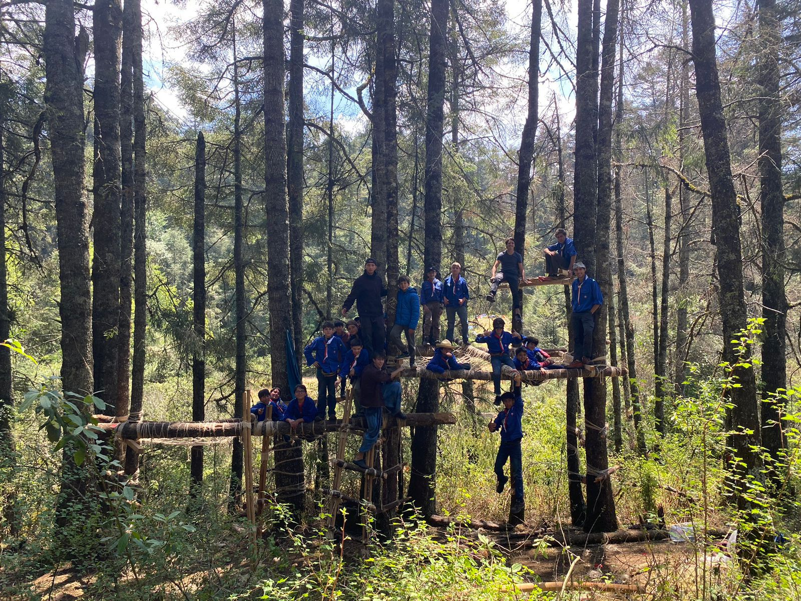
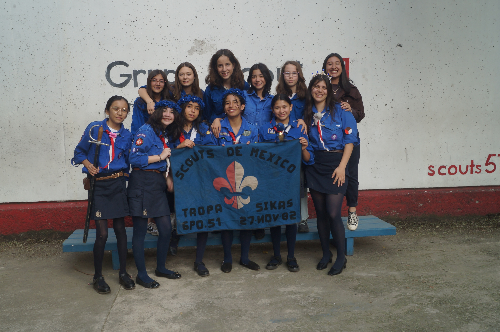
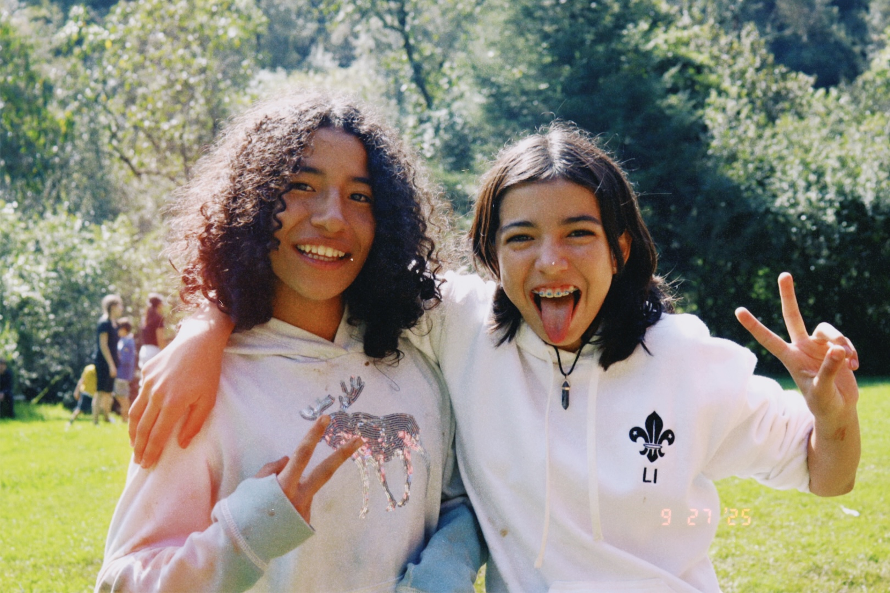
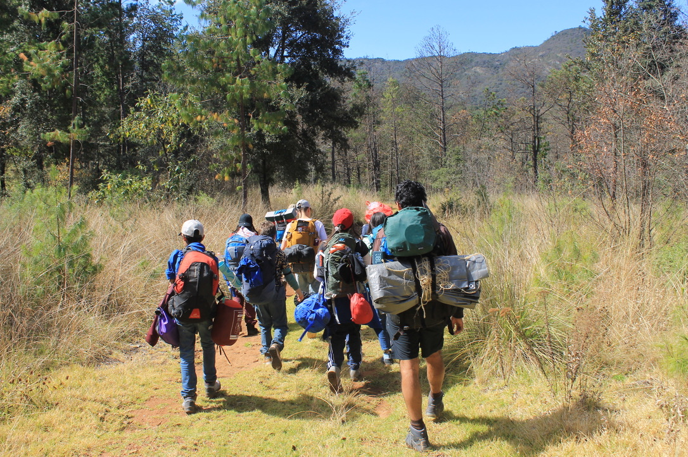
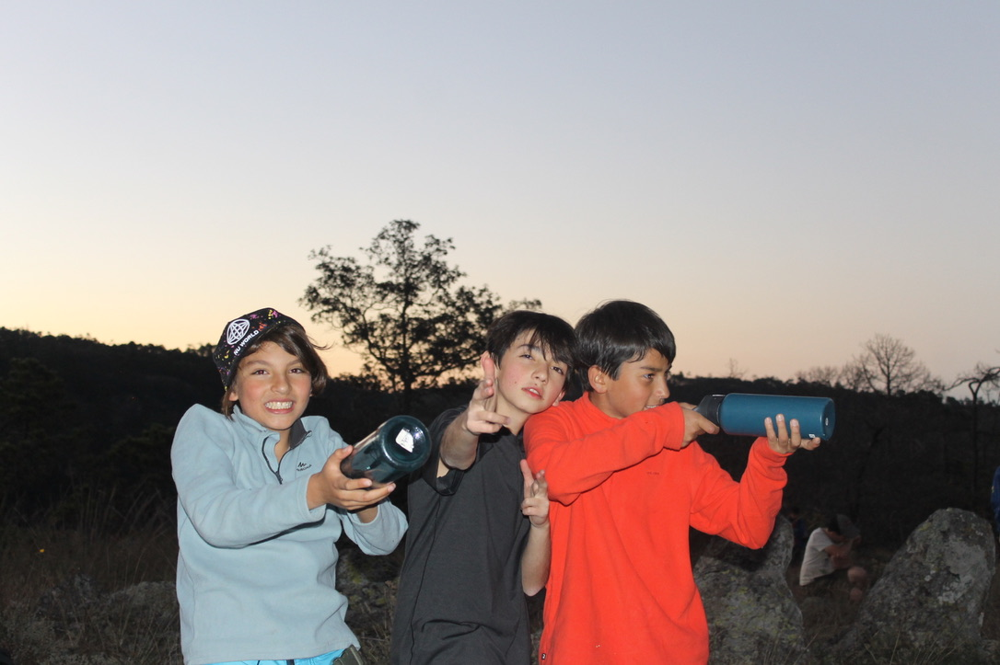

SIKAS Y CENTINELAS
La aventura toma forma — patrullas, campamentos, técnicas de campo y el inicio del liderazgo juvenil.
LA EXPERIENCIA SCOUT EN SU MÁXIMA EXPRESIÓN
La sección de Sikas y Centinelas representa el corazón del movimiento scout, donde jóvenes entre 11 y 15 años viven la aventura scout en su forma más auténtica. Es la etapa donde se consolidan los valores, se desarrollan habilidades de liderazgo y se fortalece el compromiso con la comunidad.
En esta edad, los scouts tienen la madurez para enfrentar desafíos más complejos, participar en expediciones exigentes y asumir roles de responsabilidad dentro de la tropa. Cada actividad está diseñada para fomentar la autonomía, el trabajo en equipo y el desarrollo personal.
La división entre Sikas (11-13 años) y Centinelas (13-15 años) permite adaptar las actividades al nivel de desarrollo de cada scout, asegurando que todos tengan experiencias significativas y desafiantes acordes a su edad.


OBJETIVOS DE LA SECCIÓN
Nuestra misión es acompañar a cada scout en su desarrollo integral, fortaleciendo su carácter, promoviendo valores de servicio y liderazgo, y brindándoles herramientas para convertirse en ciudadanos comprometidos y responsables.
“Formamos jóvenes capaces de enfrentar desafíos, liderar con ejemplo y contribuir positivamente a su comunidad. A través de la aventura al aire libre, el servicio y el trabajo en equipo, cada scout descubre su potencial y construye su propio camino.”
GALERÍA





QUÉ HACEMOS
CAMPAMENTOS
Expediciones de varios días donde los scouts ponen en práctica sus habilidades, aprenden nuevas técnicas y fortalecen vínculos con su patrulla.
EXCURSIONES
Salidas y caminatas que desarrollan resistencia física, habilidades de orientación y aprecio por la naturaleza y el medio ambiente.
TÉCNICAS SCOUT
Formación en primeros auxilios, construcciones, orientación, supervivencia, cocina al aire libre y otras habilidades esenciales del escultismo.
SERVICIO Y COMUNIDAD
El servicio comunitario es fundamental en la formación scout. Nuestros sikas y centinelas participan activamente en proyectos que benefician a su comunidad, desarrollando empatía, responsabilidad social y compromiso ciudadano.

ÚNETE A LA TROPA
¿Tienes entre 11 y 15 años y quieres vivir grandes aventuras, desarrollar tu liderazgo y hacer amigos para toda la vida? Únete a nuestra tropa de Sikas y Centinelas.
ESCRÍBENOS POR WHATSAPP